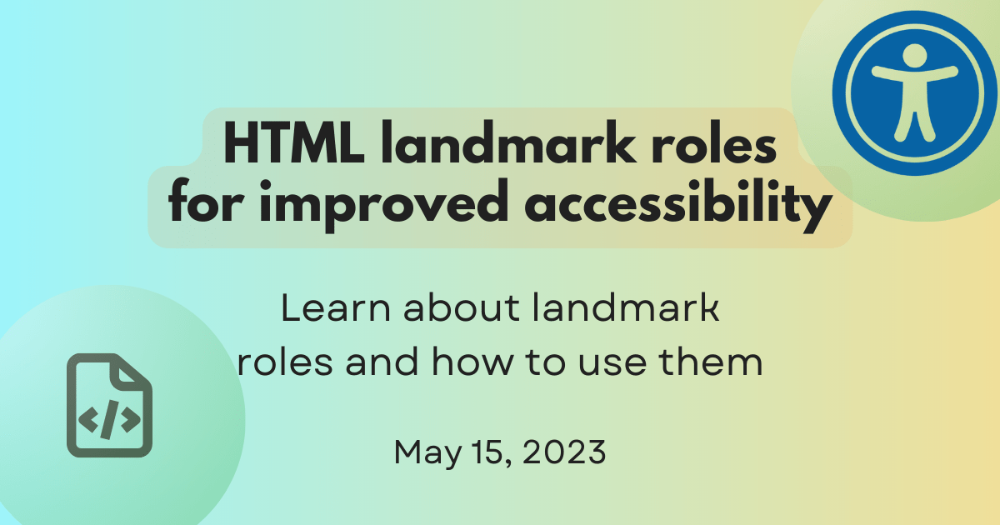
Using HTML landmark roles to improve accessibility
It's important to make sure that your website is accessible to all users, including those using assistive technologies such as screen readers. One way to do this is by using ARIA landmark roles to help screen reader users easily navigate your website. There are other benefits to using landmark roles, such as improving the semantics of your HTML and making it easier to style your website. In this blog post, we'll take a closer look at these landmarks and how to use them on your website using a simple example.
What are HTML landmark roles?
Landmarks are defined in the Accessible Rich Internet Applications (ARIA) specification as regions of a page that a user might want quick access to. While it is not stated that this is specifically for screen reader users, they are a group of users for which these are particularly helpful. There are eight landmark roles defined in the ARIA specification:
bannernavigationsearchmainregioncomplementaryformcontentinfo
One way to assign a specific role to an element is by using the role attribute on the element. For example:
<div class="banner" role="banner"></div>
While there may be cases where you need to set the role of an element explicitly, some HTML elements already have roles associated with them. For the rest of this post, we will follow the first rule of ARIA, which is as follows:
If you can use a native HTML element or attribute with the semantics and behavior you require already built in, instead of re-purposing an element and adding an ARIA role, state, or property to make it accessible, then do so.
How to use landmark roles
For the purpose of illustrating how HTML landmarks work, we will build a basic web page that will improve the user experience and accessibility of a page for screen reader users. We will not write any CSS but focus on writing clean, semantic HTML.
Save the following HTML to a file called index.html and open it in your favorite browser.
<!doctype html>
<html lang="en">
<head>
<meta charset="UTF-8" />
<meta name="viewport" content="width=device-width, initial-scale=1.0" />
<meta http-equiv="X-UA-Compatible" content="ie=edge" />
<title>Mr. Pineapple's Pizzeria</title>
</head>
<body></body>
</html>
You should see a blank page with the title "Mr. Pineapple's Pizzeria" in the browser tab. For each of the landmarks, we will add the appropriate HTML and inspect the accessibility tree to see how it changes.
The banner landmark
The banner landmark is used to identify the header of a webpage, which typically contains the website's logo, navigation, and search input. When the <header> element is not used as a child of the <main> element or another sectioning element, it is assigned the banner role.
Let's see how this looks by adding a banner landmark to our page.
<body>
<header>
<a class="logo" href="/">
<span class="visually-hidden">Mr. Pineapple's Pizzeria</span>
</a>
</header>
</body>
Refresh the page and open the developer tools. Depending on your browser, how you access the accessibility tree will be different. You can follow the links below for more information:
- Firefox
- Chromium (Edge, Chrome, Arc)
- In Safari, open the developer tools (called the Web Inspector). Select an element in the Elements tab. On the far right, select the Node tab and expand the Accessibility section.
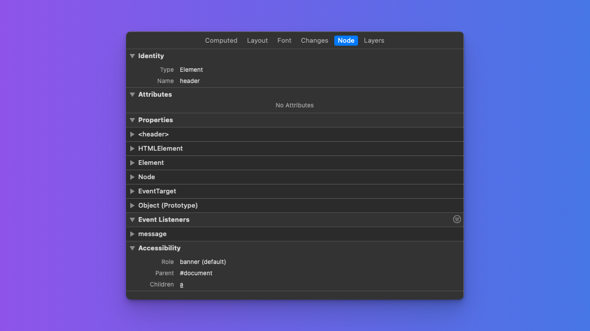
As you can see from the screenshot, with the <header> element selected, the role is shown as banner. We are off to a great start!
Note The Firefox developer tools' accessibility inspector will not show the appropriate role for the element. Instead, it will display the role for all of these elements as "landmark". This issue has been addressed and will land in Firefox 114. If you are using Firefox for developers, the issue will already be resolved.
The navigation landmark
The navigation landmark is used to identify a set of links that help users navigate the web page or related web pages. This can include things like sidebar navigation, the site's main navigation, or a set of related links in the page's footer.
As mentioned earlier, one of the common elements found in the page header is the site's primary navigation. Let's add one to our page:
<nav aria-label="Primary">
<ul>
<li><a aria-current="page" href="/">Home</a></li>
<li><a href="/menu">Our pizzas</a></li>
<li><a href="/contact">Get in touch</a></li>
</ul>
</nav>
Here, we use the <nav> element element because it implicitly has the navigation role. Since a page could have multiple navigation elements, it is important to identify each of these landmarks uniquely. For this, we use the aria-label attribute and give the navigation landmark the name "Primary".
Note When a screen reader describes the above navigation landmark, it will say "Primary navigation". This is why the word "navigation" is not included in the
aria-labelvalue.
If you inspect the <nav> element, you will notice two things: the element is identified as a navigation landmark and exposes the value we assigned using aria-label.
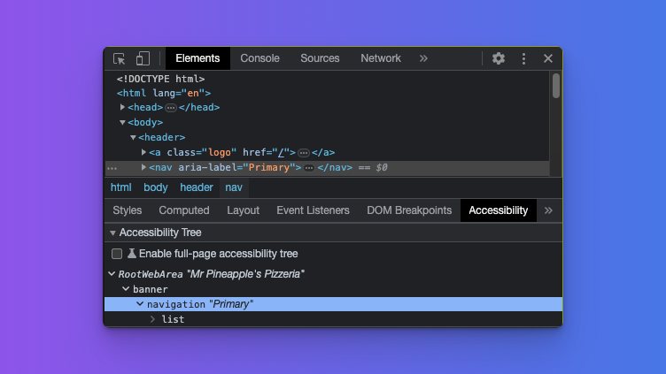
The search landmark
The search role is used to group a set of related elements that together provide a means to search the website. The most common way to use this role is through a form.
<form name="site-search" action="/search" method="get" role="search">
<label for="query">Find your perfect pizza</label>
<input type="search" id="query" name="query" />
</form>
Here we encounter the first instance where we need to assign a role to an element explicitly. As there is no native HTML element that has the implicit role of search, we assign the role to the <form> element in this example.
This will change with the introduction of a new HTML element that we'll discuss later in this article.
If you inspect the form element using the developer tools, you will see that it correctly identifies the landmark as a search landmark:
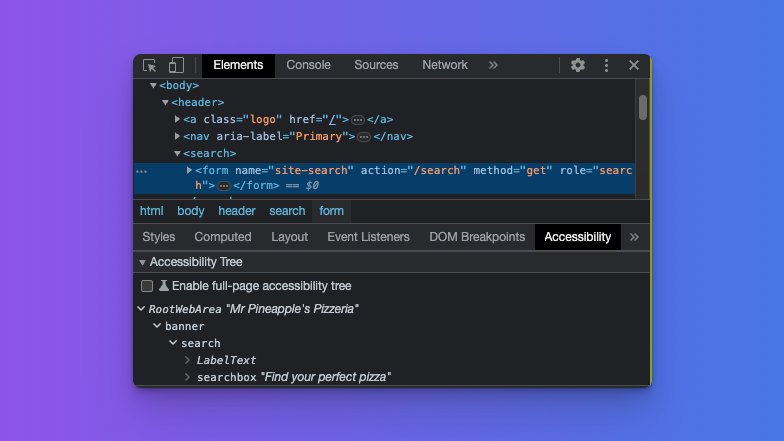
The main landmark
We are now stepping out of the header and into the main content of our page. This introduces the next landmark, aptly named main. It is important to note that a page can only have a single <main> element.
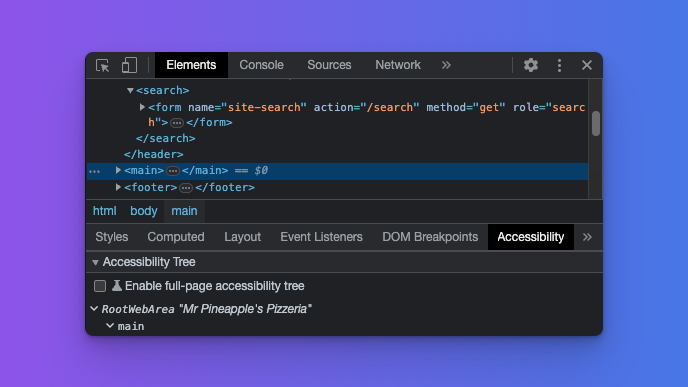
Selecting the <main> element in the developer tools will now correctly identify our main content.
The region landmark
Our main content can be made up of different types of content or regions, and as luck would have it, there is a role for that. The region role is an interesting one; technically there is an HTML element with an implicit role of region, but the element in question is shrouded in a bit of controversy.
The element I am referring to is the <section> element, or as some people call it, a <div> by another name. The reason for the controversy is that when used as in the example below, it doesn't have any semantic meaning:
<section>
<h2>Our pizzas</h2>
<ul>
<li>Margherita with pineapple</li>
<li>Veggie with pineapple</li>
<li>Meaty with pineapple</li>
</ul>
</section>
Inspecting it with the developer tools will also show that it is not identified as a region navigational landmark:
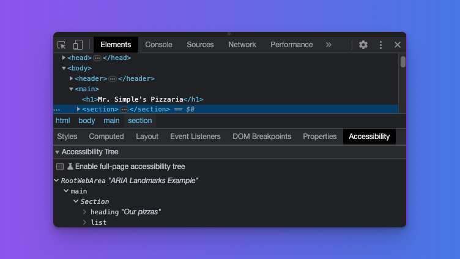
So how do we turn this into a region? We can do this by associating a heading element with the section using the aria-labelledby attribute. This serves two purposes: it turns the section into a region navigational landmark and the heading then provides a unique name for the region.
In rare cases where there is no heading to associate with the <section> element, you can also use the aria-label attribute to achieve the same end result. Let's update our previous code to do just that:
<section aria-labelledby="our-pizzas-heading">
<h2 id="our-pizzas-heading">Our pizzas</h2>
<p>
All our pizzas come with the best pizza topping in the world. Pineapple!
</p>
<ul>
<li>Margherita with pineapple</li>
<li>Veggie with pineapple</li>
<li>Meaty with pineapple</li>
</ul>
</section>
When you inspect the <section> element now, it will be correctly identified as a region landmark and show the inherited name from the heading element:
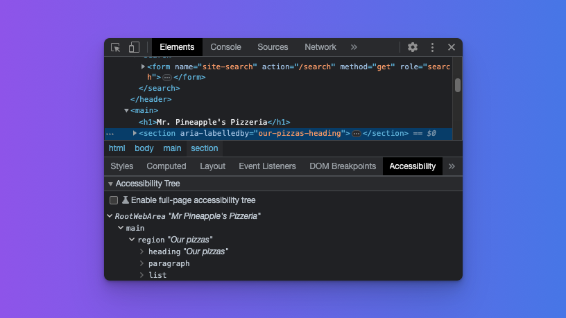
At this stage, it is important to reiterate the reason for using landmarks. Landmarks are meant to identify key areas of a page a user would most likely be interested in and would want to navigate to. Therefore, be mindful when deciding which areas of your page should be highlighted as a landmark.
The complementary landmark
The complementary landmark is meant to identify content that is, well, complementary to the main content while still remaining meaningful when separated from the main content. This can include things like related articles, show times, or weather information. For our page, we will link to some great pizza recipes.
This time around, we do have a native HTML element we can use for our complementary landmark:
<aside aria-labelledby="pizza-recipe-heading">
<h3 id="pizza-recipe-heading">Make your own pie!</h3>
<p>Below is a list of our favorite pizza recipes.</p>
<ul>
<li><a href="/mushroom-pizza">The shroom</a></li>
<li><a href="/smokey-joe">Smokey Joe</a></li>
<li><a href="/fromage">Fromage</a></li>
</ul>
</aside>
The <aside> element has the implicit role of complementary and is, therefore, the perfect choice for our needs. Because we can have more than one complementary region on a page, it is important that we name each of these uniquely and descriptively. We can achieve this by either associating a heading element with the attribute aria-labelledby or using aria-label on the <aside> element.
Inspecting the element in the developer tools will show that it is identified as a complementary navigational landmark role and inherits its name from the associated heading element.
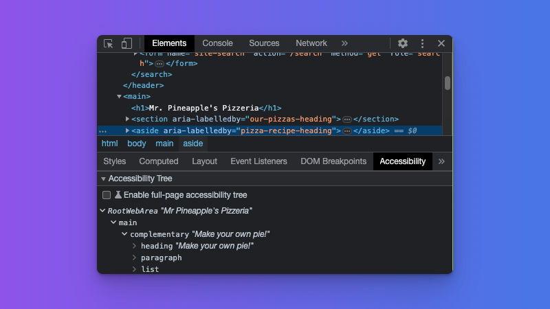
The form landmark
At first glance, this one might seem obvious, and it would be if it were not for an important nuance similar to what was discussed for the <section> element. Lets add a newsletter subscription form to our page.
<div class="newsletter">
<h3>Subscribe to Mr. Pineapple's newsletter</h3>
<p>
In our newsletter, you can expect even more wonderful pizza recipes, all
featuring the versatile pineapple.
</p>
<form name="newsletter" action="/subscribe" type="post">
<label for="email">Please provide your email address</label>
<input type="email" id="email" name="email" />
<button type="submit">Pineapple Me 🍍</button>
</form>
</div>
If you inspect the <form> element, you might be disappointed to see that it is not identified as a form landmark but a generic section:
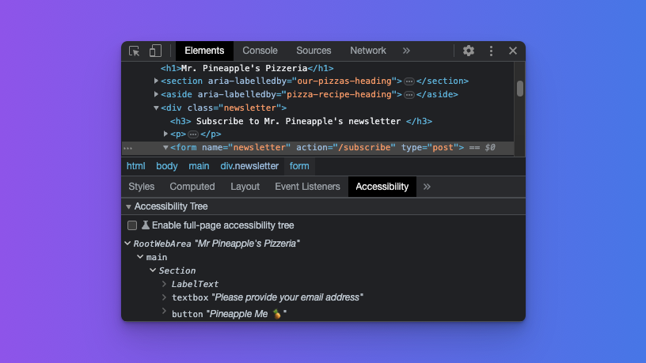
What gives? As with the <section> element earlier, you need to either associate a heading element with the form or use the aria-label attribute. We already have a descriptive heading, so all we need to do is associate the heading with the form.
<div class="newsletter">
<h3 id="newsletter-subscribe-form-heading">
Subscribe to Mr. Pineapple's newsletter
</h3>
<p>
In our newsletter, you can expect even more wonderful pizza recipes, all
featuring the versatile pineapple.
</p>
<form
aria-labelledby="newsletter-subscribe-form-heading"
name="newsletter"
action="/subscribe"
type="post">
<label for="email">Please provide your email address</label>
<input type="email" id="email" name="email" />
<button type="submit">Pineapple Me 🍍</button>
</form>
</div>
With those changes in place, inspecting the form element will yield the expected result:
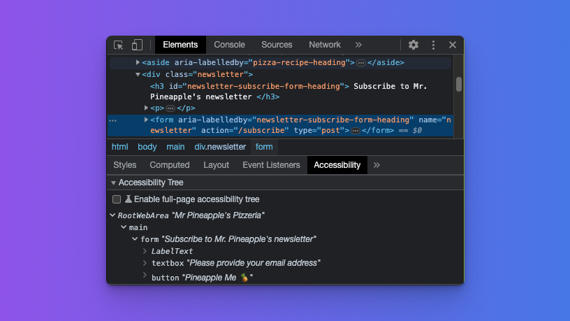
The contentinfo landmark
The contentinfo landmark is used to identify information about the web page, such as copyright information or links to privacy statements. The most common use case for this is the footer of a page. Here again, we have a native HTML element that comes to the rescue.
<footer>
<p>Copyright © Mr. Pineapple's Pizzeria - 2023</p>
</footer>
As with the <header> element, it is important that the <footer> element not be inside the <main> element or another sectioning element. If so, it will not have the implicit role of contentinfo. Seeing that our <footer> element is a direct descendant of the <body> element, inspecting it in the developer tools will yield the expected result.
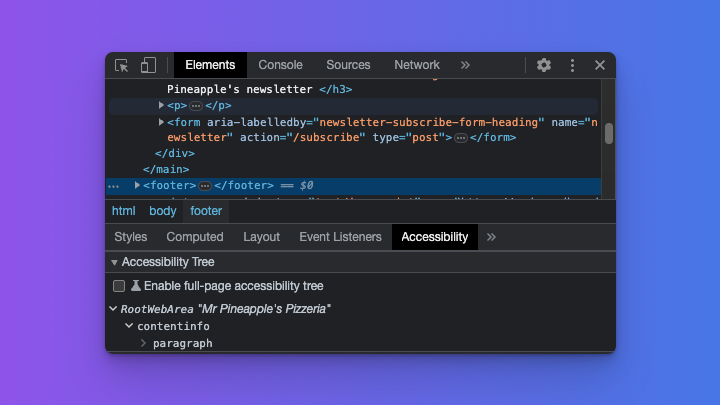
A new search HTML element
We have now covered all of the landmark roles, and for each landmark, we had a native HTML element we could use. Sure, we had to do a little bit of extra work for the region and form landmarks, but we never had to use the role attribute explicitly.
But wait, what about the search landmark? We had to use the role attribute on the form. Dang it, you got me! But I did mention that I would have a surprise for you later in the post. The days of having to assign the search role to a form explicitly are coming to an end with the introduction of the new <search> element. So, how do we use it? Let's update our earlier search landmark to use the new element:
<search>
<form name="site-search" action="/search" method="get" role="search">
<label for="query">Find your perfect pizza</label>
<input type="search" id="query" name="query" />
</form>
</search>
This is life on the bleeding edge though, so if you inspect the <search> element today (early 2023), you will find that it shows up as ignored in the accessibility tree.
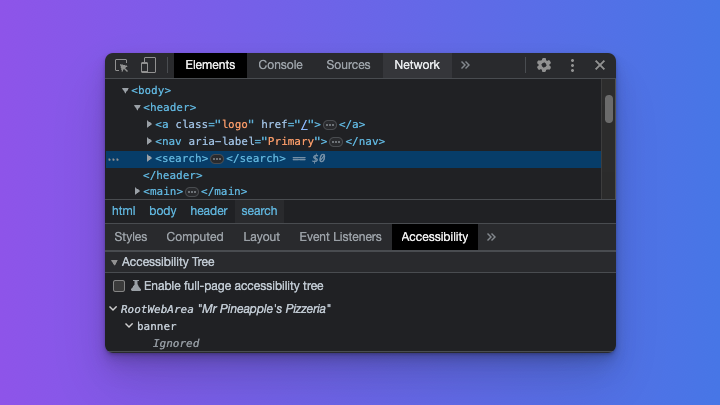
This is why I kept the role attribute on the nested <form> element. Once browsers and screen readers start to implement the <search> element, there will no longer be a need for the role attribute on the form. There was a time when the <main> element had the same problem, mainly due to a lack of support in Internet Explorer, and one therefore needed to add role="main" to the element explicitly.
We can now take a step back and look at the glorious accessibility tree we built together:
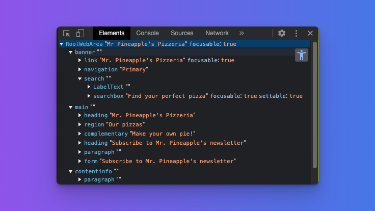
It's a thing of beauty, is it not?
Enabling the full accessibility tree in Chrome
Note that showing this tree is an experimental feature in Chromium browsers. With accessibility tab selected in the developer tools, you should see and entry that reads, "Enable fullpage accessibility tree" with a unchecked checkbox to the left.
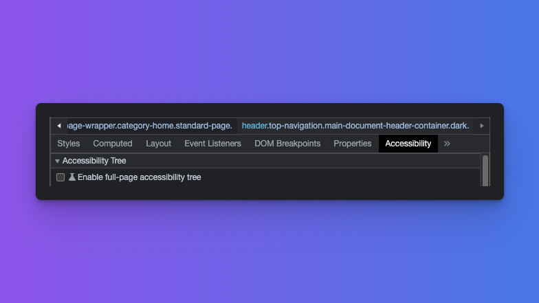
When you check the checkbox, a notice will be shown asking you to reload the DevTools. Once you click the button and the DevTools reloads, you will see a new icon at the top right of the Elements panel. Clicking this icon will show the full accessibility tree.
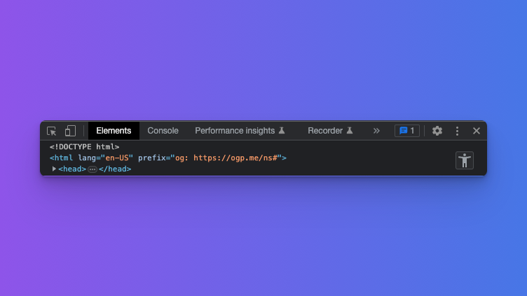
Demonstrating the landmarks with a screen reader
Bringing it all together, let's see how our landmarks work with a screen reader.
- Watch the video on Mozilla Developer which shows how a screen reader user can use our landmarks to navigate.
- Check the CodeSandbox for this post to try out the page we created above in its finished form.
Summary
HTML landmarks are an important tool for making webpages more accessible to screen reader users. By defining landmarks on your webpage, you can help users navigate more easily and find the information they need quickly. Remember to use the appropriate HTML elements whenever possible and to label your landmarks clearly, so users know what they're for.